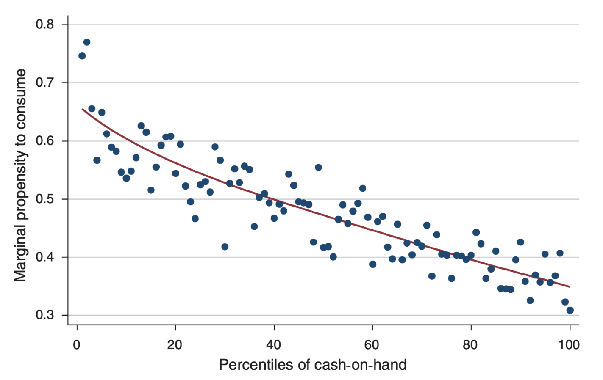

Intro to Heterogeneity
Macro II - Fluctuations - ENSAE, 2023-2024
Heterogeneity in models
DSGE models are often criticized for unrealistic assumptions
. . .
Example:
Macroeconomic Policy in DSGE and Agent-Based Models from Revue de l’OFCE
In that respect, the Great Recessions has revealed to be a natural experiment for economic analysis, showing the inadequacy of the predominant theoretical frameworks. Indeed, an increasing number of leading economists claim that the current ’’economic crisis is a crisis for economic theory’’ (Kirman, 2010; Colander et al., 2009; Krugman, 2009, 2011; Caballero, 2010; Stiglitz, 2011; Kay, 2011; Dosi, 2011; Delong, 2011). The basic assumptions of mainstream DSGE models, e.g. rational expectations, representative agents, perfect markets etc., prevent the understanding of basic phenomena underlying the current economic crisis
. . .
But:
mainstream models typically incorporate many non classical elements. For instance New Keynesian models feature imperfect competition
one must distinguish mainstream models from DSGE methodology
- today: DSGE model with rather radical conclusion
Representative Agent
Under the Representative agent assumption
- aggregate choices are made as the result of a single optimization problem
- ☡ there might restrictions on what is internalized by the agent
. . .
Is it a simplifying assumption?
. . .
Or is it actually equivalent to the aggregation of many optimization problems?
. . .
For the latter one needs a theory of aggregation1
- … which quickly breaks down (for instance when utility fonction are heterogenous)
Example with the Neoclassical Model
Let’s consider three versions of the neoclassical model
- fully decentralized (many firms, many consumers)
- representative agent
- planner problem
Note:
- for the neoclassical model, there is a theory of aggregation for the production sector (firms are Cobb-Douglas)
- two assumptions are needed to aggregate consumers: log-utility and no uncertainty
Heterogenous Agents
Some economists have recognized early the need to explicitly model heterogeneity.
1977: Bewley
- idiosyncratic stochastic endowment
- consumption-savings model with borrowing constraints
- leads to ex-post heterogeneity (constrained/unconstrained) hence different reactions
Huggett Economy (1993)
- additional ex-ante heterogeneity in idiosyncratic income process
Ayiagari Model (1994)
- savings are invested to accumulate aggregate capital
- consumption-savings model with borrowing constraints
- idiosyncratic productivity shocks (salary)
Krussell Smith Model (1998)
- Ayagari + aggregate shocks
Those models require special computational techniques and were poorly understood mathematically
Mean Field Games and Heterogenous Agents Models
2012 Ben Moll did a talk at IMA (UK)
. . .
. . .
Economists and world class mathematicians exchanged on mean field games
- a class of mathematical problems which encompasses heterogenous agents models
- a bit math intense (stochastic calculus, viscosity theory, …)
Mean Field Games and Heterogenous Agents Models
2012 Ben Moll did a talk at IMA (UK)
Result: a new stream of heterogenous agents papers
PDE Models in Macroeconomics (2014) with Achdou, Bueary, Lasry, Lions
The Dynamics of Inequality (2016) with Gabaix, Lasry, Lions
Monetary Policy According to HANK (2018) with Kaplan and Violante
- that one was hugely successfull
HANK, HANK HANK, …
Monetary Policy According to HANK (2018), by Moll, Kaplan and Violante
- HANK: Heterogenous Agents New Keynesian
- study unequal consequences of monetary policies
- a new baseline model for central banks
. . .
Heterogenous consumers
Why does it matter to model consumer’s heterogeneity?
. . .
- To reproduce realistic consumption decisions.
. . .
Classically, we make the difference between two kinds of agents:
Agents who can freely reallocate consumption intertemporally.
They have a high marginal propensity to consume out of additional income.
Ricardian households choose not to consume more today, in order to consume more tomorrow.
Agents whose consumption in the current period is limited by a binding credit constraint. Either they can’t borrow at all or the amount they can borrow is limited today.
They have a high marginal propensity to consume out of additional income.
Keynesian Households consume today as much as they can.
. . .
The representative agent assumes everyone is ricardian.
What does the data say?
Let’s have a look at the MPC distribution for France.4


. . .
Apparently MPC is well predicted by Cash-in-hand (amount of money left to household after having made all compulsory payments).


. . .
Agents in the middle of the wealth distribution have a mortgage, whose interests leaves very little to spend after payments. They have lower cash-in-hand hence higher marginal propensity to consume (than rich agents).
Wealthy Hand to Mouth agents
We have just seen that agents in the middle of the wealth distribution, hold a wider proportion of wealth in illiquid assets (housing)
- Their cash in hand (available for immediate purchase) is reduced. A sizable fraction of ther income goes into repaying their loan…).
- They have higher MPC
- They also react to interest rates changes (notably those who have floating interest rates)
- “Monetary Policy According to HANK”, 2018, Kaplan, Moll and Violante, stress out the role of “wealthy hand to mouth” and the need to take their existence to evaluate the influence of monetary policies.
How do we model differences in MPC?
Specify several kinds of agents:
- ricardians
- hand to mouth (consumption = income)
- ex-ante heterogeneity
By endogenizing borrowing constraint with borrowing constraint
- requires nonlinear solution
- ex-post heterogeneity
- with potential idiosyncratic parameters like time-discount (ex-ante heterogeneity)
By using preference for wealth
- coming next
Inequality, Leverage and Crisis


Inequality, Leverage and Crisis, Kumhof, Rancière, Winant (2015)
Introduction
The 2007 financial crisis, was initially as subprime mortgage crisis
- high indebtedness from low income households
- fueled by easy credit (low i.r.) and high house prices
- debt-securitization
- even for high risk debt (subprimes)
- of which 90% had variable interest rates and/or balloon payments
- (moderate) rise in interest rates
- bursting of the housing buble
- households were unable to refinance their loans
- … and defaulted
- mbs market collapsed…
- … and with it the whole financial sector
. . .
Ok, but from a macro perspective, what fueled such high levels of borrowing?

A similar pattern emerged before the great recession and before the great depression:5
- parallel increases in income inequality and debt over income ratios
Increase in wealth inequality is consistent.

Econometric measures of household default risk 6 rose consistently.
Model
What could link rising income inequality to increased borrowing by bottom-earners?
Intuition:
- top-earners have higher marginal propensity to save
- when their income increases they lend to bottom earners
- and rising debt increases the risk of default
Let’s see how to model that in DSGE fashion (ommiting default risk for the sake of simplicity)
Endowments
We consider and endowment economy:
- Total output
\[y_t = (1-\rho_y) \overline{y} + \rho_y y_{t-1} + \epsilon_{y,t}\]
- Inequality shock
\[z_t = (1-\rho_z) \overline{z} + \rho_z z_{t-1} + \epsilon_{z,t}\]
Comments:
\(z_t\) is the fraction of the total output that is received by top-earners. The rest is received by bottom earners.
We assume there is a faction \(\chi\) of top earners.
our goal is to study the effect of a persistent inequality shock (with \(\rho_z=1\))
- we need a way to model nonzero marginal propensity to save out of a persistent income shock
Top Earners
We choose the following utility function for top earners: \[U_t = E_t \sum_{k\geq0}^{\infty} \beta^k_{\tau} \left\{ \frac{\left(c^{\tau}_{t+k}\right)^ {1-\frac{1}{\sigma}}}{1-\frac{1}{\sigma}} + \varphi \frac{\left( 1+b_{t+k}\frac{1-\chi}{\chi}\right)^{1-\frac{1}{\eta}}}{1-\frac{1}{\eta}} \right\}\]
. . .
Consumption: \[c^{\tau}_t = y_t z_t \frac{1}{\chi} + \left(b_{t-1}-b_t p_t\right)\frac{1-\chi}{\chi}\] where \(b_t\) is debt holdings and \(p_t\) the price of it \(1/r_t\)
. . .
Optimality condition from \(\max U_t\)
\[p_t = \beta_{\tau} E_t\left[ \left( \frac{c^{\tau}_{t+1}}{c^{\tau}_t}\right)^ {-\frac{1}{\sigma}}\right] + \varphi \frac{\left(1+b_t \frac{1-\chi}{\chi}\right)^ {-\frac{1}{\eta}}}{\left(c_t^{\tau}\right)^ {-\frac{1}{\sigma}}}\]
Preference for Wealth
The preference for wealth can be justified as:
- a preference for social status
- capitalist spirit
It implies a steady-state supply of lending for any income level:

Which in turn implies non-zero marginal propensity to save from a permanent income shock (in the short and the long run)
Parameters \(\eta\) and \(\varphi\) are not observed, but can be chosen in order to match real world MPC (50% for top earners).
Bottom Earners
Bottom earners are standard:
\[V_t = E_t \sum_{k \geq 0}^{\infty} \beta^k_b \left( \frac{\left(c_{t+k}^b\right)^ {1-\frac{1}{\sigma}}}{1-\frac{1}{\sigma}} \right)\]
Budget constraint:
\[c^b_t = y_t(1-z_t)\frac{1}{1-\chi} + \left(b_t p_t - b_{t-1}\right)\]
Optimality condition from \(\max V_t\)
\[p_t = \beta^b E_t \left[ \left( \frac{c_{t+1}^b}{c_t^b}\right)^{-\frac{1}{\sigma}} \right]\]

In the simulation we use historical values for the driving shocks (output and inequality).
What is the predictive power of the model:
- we match one moment: the evolution of debt/gdep from 1983 to 2010
Footnotes
check Household heterogeneity in macroeconomic models: A historical perspective (or an older blog) for history of heterogenous agents↩︎
the ones in the list are not necessary the most representative↩︎
pseudo representative new-keynesian model↩︎
From From Fiscal Policy and MPC Heterogeneity, Tullio Jappelli and Luigi Pistaferri, American Economic Journal: Macroeconomics, 2014↩︎
inequality data from Saez and Zucman↩︎
From Schularick and Taylor (2014)↩︎